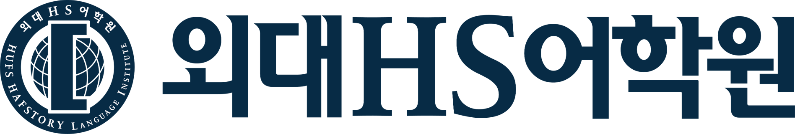

친절의 끝을 보여주는 교육!지속적으로 학생의 역량과 성향을 강화하는 수업!지속, 효율적으로 성장하는 학생!
Academy Story
운정 수학학원 소개
수학의힘∫외대HS어학원은 친절함과 시간 효율, 학생 역량 강화라는 분명한 철학 위에서 운영되는 운정 프리미엄 캠퍼스입니다.
Philosophy
수학의힘∫외대HS 교육 철학
브랜드보다 먼저 기억되어야 할 운영 기준
수학의힘∫외대HS는 학생이 오래 공부하는 것보다 더 효율적으로 성장하도록 돕는 데 집중합니다. 과장된 표현보다 명확한 학습 설계와 친절한 소통, 결과로 이어지는 관리 체계를 중요하게 생각합니다.
Time Effective SYSTEM
교수학습 설계의 핵심은 Time Effective SYSTEM, 그리고 시성비 시스템입니다. 긴 공부 시간보다 목표에 맞는 효율적인 학습 시간 설계를 우선합니다.
친절함 속의 강한 관리
친절함은 느슨함이 아니라 학생의 학년, 성향, 학습 상태를 더 자세히 이해하기 위한 태도입니다. 상담, 리포트, 시험 후 분석까지 관리가 끊기지 않도록 설계합니다.
지속, 효율적으로 성장하는 학생
단기 점수 향상에만 머무르지 않고 다음 시험, 다음 학기, 상위 학년으로 이어지는 성장 흐름을 만드는 것이 본원의 목표입니다.
Brand Identity
각자의 전문성을 유지하면서 하나의 캠퍼스 경험으로 연결합니다.
수학의힘
POWER OF MATH라는 이름에 맞게 개념 이해, 문제 적용, 내신 관리, 심화까지 단단하게 연결하는 브랜드입니다.

외대HS어학원
학교별·학년별 내신 Process와 리포트, 상담, 서술형 writing까지 이어지는 영어 전문 브랜드입니다.